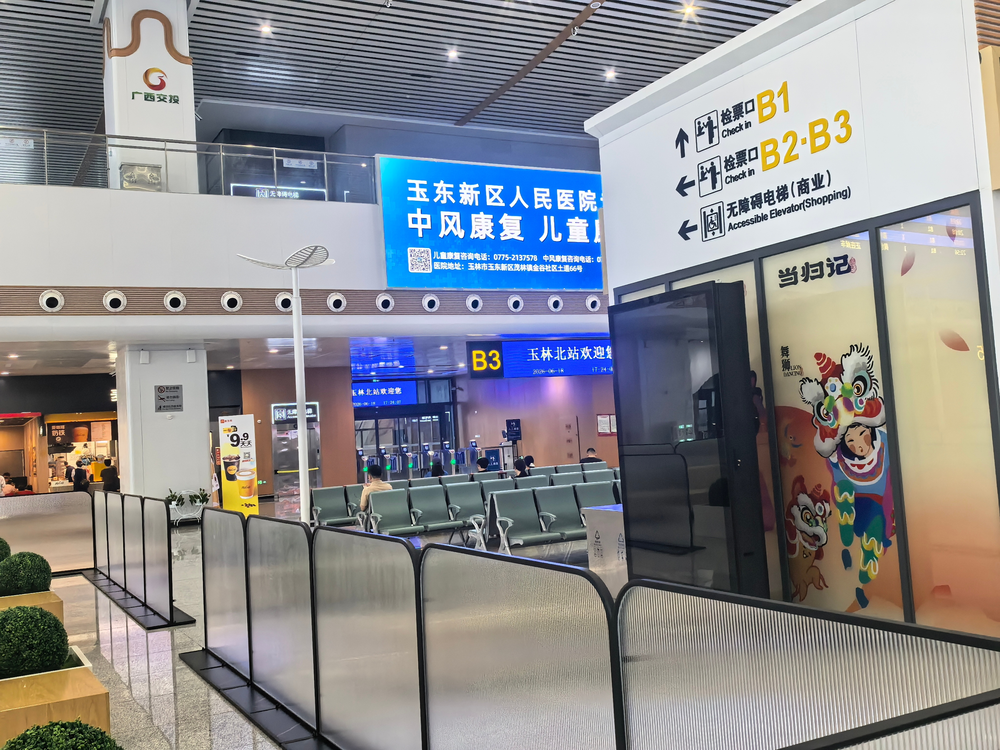

项目概况：玉林北站与候车厅A3灯箱位
玉林北站——广西第三大高铁站
玉林北站是南珠高铁南玉段的核心站点，站房面积约5万平方米，站场规模4台9线，是广西壮族自治区内仅次于南宁东站和桂林北站的第三大高铁站。作为玉林市首个高铁站，玉林北站自开通以来承担着玉林及周边县市（北流、容县、陆川、博白）约740万常住人口的铁路出行需求。
南珠高铁南玉段设计时速350km/h，玉林至南宁最快仅需48分钟，使玉林正式融入南宁"半小时经济圈"。据统计，玉林北站日均客流量已稳定在5000人次以上，节假日高峰期单日客流可突破1.5万人次。
A3拉布灯箱位的媒体价值
A3灯箱位位于玉林北站候车厅核心区域，是旅客候车过程中视线自然停留的高频点位。与进站口、检票口附近的媒体位不同，候车厅内灯箱的"等待场景"天然赋予广告更长的注目时间——旅客平均候车时间为15-30分钟，这意味着品牌画面有充分机会被反复观看和记忆。
灯箱规格与上刊效果
A3拉布灯箱采用高精度UV喷绘画面，搭配LED内置光源均匀打光，画质清晰细腻，色彩还原度高。灯箱尺寸覆盖标准大幅面展示需求，远观有视觉冲击力，近看有细节质感。

投放方：玉东新区人民医院的品牌诉求
医院品牌建设现状
玉东新区人民医院（玉州区人民医院）作为区域内重要的二级甲等综合医院，多年来承担着玉林城区及周边居民的医疗健康服务。随着玉林北站的开通和城市新区的发展，医院面临新的品牌传播需求：如何在高铁时代提升区域影响力，让更多本地患者了解医院的重点科室和服务特色。
为什么选择高铁站灯箱广告？
医疗机构传统的宣传渠道以院内物料、社区义诊、地方电视/报纸为主，触达半径有限。高铁站灯箱广告的优势在于：
- 空间锁定：物理位置即流量入口，旅客进入候车厅即进入媒体的覆盖范围
- 时长优势：相较于线上广告的"3秒滑过"，灯箱在候车场景中拥有15-30分钟的阅读窗口
- 信任背书：高铁站作为城市门户，其媒体环境本身带有较强的公信力，这对医疗类品牌尤为重要
目标受众覆盖
玉林北站的旅客群体以商务出行、探亲访友和中短途旅游为主，年龄集中在25-55岁——这与医院的核心服务人群高度重合。特别是35岁以上的中年旅客群体（来源：交通运输部铁路旅客出行特征报告），往往正处于家庭医疗决策的核心角色，对中风康复、儿童康复、老年病诊疗等专科服务有更直接的需求。
作为这次合作的亲身参与者，玉东新区人民医院宣传科负责人评价道："每天数千名旅客从玉林北站经过，候车厅灯箱就是最直接的'医院名片'。上刊后我们在门诊中也遇到了有患者说'在车站看到你们医院'，这对区域品牌认知的提升效果是实实在在的。"
联屏传媒的投放方案与执行
广告位选择策略
A3灯箱位的选择是基于"候车场景+视线黄金高度"的综合考量：
- 灯箱位于候车厅主通道侧面，旅客就座候车时视线平视即可覆盖
- 周边没有大面积遮挡物，品牌画面可视范围广
- 靠近检票口方向，旅客从进站到检票的动线均可多次触达
画面设计与制作
医院品牌画面以蓝色为主色调，突出"专业、信赖、温暖"的医疗品牌调性。画面内容聚焦两大核心科室——中风康复和儿童康复，并用清晰的层级结构呈现医院名称、科室特色和服务信息，配合二维码引导旅客进一步了解详情。
灯箱画面由联屏传媒合作的资深广告制作团队完成，采用高精度UV喷印工艺，确保画面上刊后色彩无色差、画面不起泡，整体效果达到展示级品质。
上刊安装与验收
从确认排期到完成安装，联屏传媒团队在3个工作日内完成画面制作、现场安装和对光调试。安装完成后，由项目负责人现场拍摄实景照片并提交客户验收——客户对画面色彩还原度、灯箱位置效果及灯光均匀度均表示满意，确认验收后正式投放。
案例数据与效果预估
日均曝光量
玉林北站日常客流量约5000人次，A3灯箱位位于候车厅核心区域，实际覆盖可视客流约为进站总人流的60%-70%。综合估算，日均有效曝光约3000-3500人次，节假日及春运期间曝光量可翻倍。
月度触达人次
按日均曝光3500人次计算，单月累计曝光约10.5万人次。考虑到往返旅客的重复触达，实际独立触达人次约为6-8万人/月。对于定位区域市场的医疗机构而言，这一覆盖半径已基本囊括玉林市区及下辖各县域的重点目标人群。
说明：以上数据基于玉林北站客流统计数据及灯箱位置可视率测算，具体曝光数据以实际监测报告为准。
【FAQ】高铁站灯箱广告常见问题
玉林北站灯箱广告价格是多少？
灯箱广告价格受位置、尺寸、投放时长等因素影响。A3灯箱等具体点位的刊例价，建议直接联系联屏传媒获取最新报价方案。我们提供按周、按月、按季度多种投放周期选择，并可针对医疗机构推出专属服务方案。
医疗广告投放高铁站需要什么资质？
根据广告法及医疗广告管理相关规定，医疗机构投放户外广告需提供：①《医疗机构执业许可证》副本；② 医疗广告审查证明（由属地卫健部门出具）；③ 广告画面样件及科室信息对应的诊疗科目证明。联屏传媒可协助客户完成广告审查备案流程。
联屏传媒还运营哪些广告位？
公司独家运营南珠高铁南玉段玉林北站（50+媒体位）、兴业南站（15个）、横州站（18个）及南宁机场T2航站楼（36台刷屏机）。媒体形式覆盖：拉布灯箱、LED大屏、电子刷屏机、墙体灯箱、包柱灯箱等，可满足品牌方从形象曝光到精准触达的多层次需求。
从下单到上刊需要多长时间？
画面确认+广告审查备案+制作安装，标准流程约 5-7个工作日。如需加急，可协调最快3个工作日内完成上刊。
关于联屏传媒
广西联屏传媒科技有限公司 是南珠高铁南玉段玉林北站、兴业南站、横州站及南宁机场T2航站楼的独家媒体运营方。公司以"让品牌在核心交通场景中被看见"为使命，致力于为广西本地政企、医疗机构、文旅景区、房产家居等品牌提供高铁站、机场场景的广告投放一站式解决方案。
- 独家资源：玉林北站50+媒体位、兴业南站15个、横州站18个、南宁机场T2航站楼36台刷屏机
- 服务覆盖：广告位策略咨询 → 画面创意设计 → 审查备案代办 → 制作安装 → 上刊监测 → 效果报告
- 合作客户：已服务医疗、教育、文旅、地产、金融等多个行业
📞 投放咨询热线：188-7877-4848（微信同号）
🌐 官方网站：https://lpmedia.cn